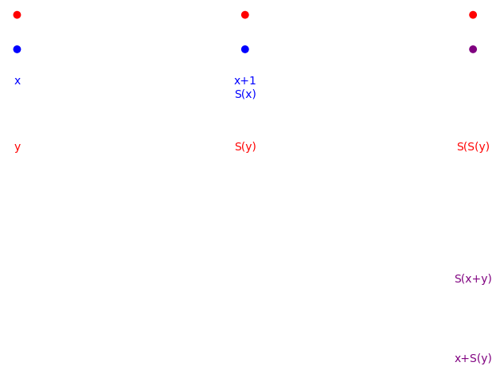
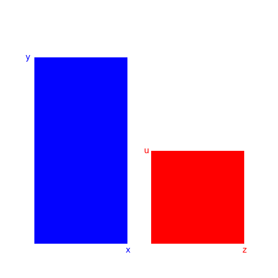

In order to meaningfully discuss concepts such as convergence, we need a definition of the real numbers. The naturals, integers and rationals are insufficient for our purposes, due to the fact that there are gaps where we would want certain values to exist. The real numbers can be "built" by extending outwards from the natural numbers, through the integers, rational numbers, and, finally, the irrational numbers. In this way, the reals inherit familiar properties and behavior from the naturals that we would want and expect them to have. Namely, this means that the set of reals should satisfy the field and order axioms.
We begin by defining the natural numbers. The natural numbers are the set \( N \) of all numbers that satisfy the following five axioms:
- 1 is a natural number;
- Closure. If \(x\) is a natural number, then there is a unique number \(S(x)\), called the successor of \(x\), that is also a natural number;
- \(S(x) \neq 1\);
- If \(S(x) = S(y)\), then \(x = y\);
- Axiom of Induction. If some property \(P\) holds for \(x\), and \(P\) also holds for \(S(x)\), then \(P\) holds for all \(x\) in \(N\).
From the Peano axioms, we can continue on to develop addition, easily suggested by this foundation. For this, we will need the following theorems:
- If \(x \neq y\), then \(S(x) \neq S(y)\).
- \(S(x) \neq x\).
- If \(x \neq 1\), then there exists one (and only one) u such that \(x = S(u)\).
Addition can then be defined as follows:
For every \((x, y)\) in \(N\), there is exactly one number \(x+y\) such that
- \(x+1 = S(x)\), for each \(x\);
- \(x+S(y) = S(x+y)\), for each \(x, y\).
We will now verify that a unique definition is possible by induction.
Let \(M\) be the set for which \(x+y\) is defined for all \(y\) such that
- \(x+1=S(x)\);
- \(x+S(y)=S(x+y)\).
Because \(x+1 = S(x)\), \(x+S(y)=(S(S(y))=S(x+y)\). Then,
- \(S(x) + 1 = S(x+1) = S(S(x))\),
- \(S(x) + S(y) = S(S(x) + S(y)) = S(S(x+y)) = S(S(x) + y))\).
Thus, \(1 \in M\).

Assume \(x \in M\). Then,
- \(S(x) + y = S(x+y)\),
- \(S(x) + S(y) = S((x + S(y))) = S((S(x+y)) = S(S(x) + y)).\)
Thus \(S(x) \in M\).
Addition is associative:
- \((x+y) + z = x + (y+z)\).
Commutative:
- \(x+y = y+x\).
Finally,
- \(y \neq x+y\);
- If \(y \neq z\), then \(x+y \neq x+z\);
- Either \(x=y\), there is exactly one \(a\) such that \(x=y+a\), or there is exactly one \(b\) such that \(y=x+b\).
The above theorems can be proven by induction. For details, see Landau.
An ordering is a binary relation on a set \(S\) that formalizes the notion of comparison. The natural numbers are equipped with a strict ordering, \(\leq\).
- If \(x = y+a\), we write \(x > y\).
- If \(y = x+b\), we write \(x < y\).
- For any \(x\), \(y\), either \(x=y\), \(x>y\), or \(x<y\).
Further properties:
- Transitivity. If \(x < y\), \(y < z\), then \(x < z\).
- Well-ordering. Every subset of \(N\) has a least element.
For every pair \(x\), \(y\), there is a unique \(x \times y\) such that
- \(x \times 1 = x\), for every \(x\);
- \(x \times S(y) = x \times y + x\), for every \(x, y\).
The proof of the uniqueness and possibility of the above definition is analogous to the technique used to demonstrate these properties in the case of addition. For details, see Landau.
Multiplication is commutative:
- \(xy=yx\).
Distributive:
- \(x(y+z) = xy+xz\).
Associative:
- \((xy)z = x(yz)\).
Finally, if \(x > y\), \(x = y\) or \(x < y\), then \(xz > yz\), \(xz=yz\), or \(xz<yz\).
A fraction \(\frac{x_1}{x_2}\) can be defined as an ordered pair of two natural numbers \(x_1\), \(x_2\). We say that a fraction \(\frac{x_1}{x_2}\) is equivalent to another fracton \(\frac{y_1}{y_2}\) if \(x_1 y_2 = y_1 x_2\). We write this as \(\frac{x_1}{x_2} \sim \frac{y_1}{y_2}\). The set of all fractions \(\frac{x_1}{x_2} \sim \frac{y_1}{y_2}\) forms an equivalence class; we call these classes rational numbers.
The equivalence relation is transitive:
If \(\frac{x_1}{x_2} \sim \frac{y_1}{y_2}, \frac{y_1}{y_2} \sim \frac{z_1}{z_2}\), then \(\frac{x_1}{x_2} \sim \frac{z_1}{z_2}\).
To prove this, set \(x_1 y_2 = y_1 x_2\), \(y_1 z_2 = z_1 y_2\). Then,
- \((x_1 y_2)(y_1 z_2) = (y_1 x_2)(z_1 y_2)\).

Because
- \((x y)(z u) = x(y(zu)) = x((yz)u) = x(u(yz)) = (xu)(yz) = (xu)(zy)\),
we have
- \((x_1 y_2)(y_1 z_2) = (x_1 z_2)(y_1 y_2)\)
and
- \((y_1 x_2)(x_1 y_2) = (y_1 y_2)(z_1 x_2) = (z_1 x_2)(y_1 y_2)\),
then,
- \((x_1 z_2)(y_1 y_2) = (z_1x_2)(y_1 y_2)\),
- \(x_1 z_2 = z_1 x_2\).
We say that \(\frac{x_1}{x_2} < \frac{y_1}{y_2}\) if \(x_1 y_2 < y_1 x_2\). Similarly, \(\frac{x_1}{x_2} > \frac{y_1}{y_2}\) if \(x_1 y_2 > y_1 x_2\).
Either
- \(\frac{x_1}{x_2} \sim \frac{y_1}{y_2}\),
- \(\frac{x_1}{x_2} < \frac{y_1}{y_2}\), or
- \(\frac{x_1}{x_2} > \frac{y_1}{y_2}\).
As is true for the naturals, the order relation is transitive: if \(\frac{x_1}{x_2} < \frac{y_1}{y_2}\), \(\frac{y_1}{y_2} < \frac{z_1}{z_2}\), then \(\frac{x_1}{x_2} < \frac{z_1}{z_2}\).
For every given \(\frac{x_1}{x_2}\), there exists a \(\frac{z_1}{z_2} < \frac{x_1}{x_2}\). Similarly, there exists a \(\frac{z_1}{z_2} > \frac{x_1}{x_2}\). Finally, if \(\frac{x_1}{x_2} < \frac{y_1}{y_2}\), there exists a \(\frac{z_1}{z_2}\) such that \(\frac{x_1}{x_2} < \frac{z_1}{z_2} < \frac{y_1}{y_2}\).
The sum \(\frac{x_1}{x_2} + \frac{y_1}{y_2}\) is defined to mean the fraction \(\frac{x_1 y_2 + y_1 x_2}{x_2 y_2}\).
The equivalence class of the sum of two fractions is determined by the equivalance classes of the summands; if
- \(\frac{x_1}{x_2} \sim \frac{y_1}{y_2}\), \(\frac{z_1}{z_2} \sim \frac{u_1}{u_2}\),
we have
- \(\frac{x_1}{x_2} + \frac{z_1}{z_2} \sim \frac{y_1}{y_2} + \frac{u_1}{u_2}\).
Addition is commutative:
- \(\frac{x_1}{x_2} + \frac{y_1}{y_2} \sim \frac{y_1}{y_2} + \frac{x_1}{x_2}\).
Associative:
- \(\frac{x_1}{x_2} + \frac{y_1}{y_2} \sim \frac{y_1}{y_2} + \frac{x_1}{x_2}\).
Finally, if \(\frac{x_1}{x_2} > \frac{y_1}{y_2}\), then the statement \(\frac{y_1}{y_2} + \frac{u_1}{u_2} \sim \frac{x_1}{x_2}\) has a solution \(\frac{u_1}{u_2}\). All solutions belong to the same equivalence class.
The product \(\frac{x_1}{x_2} \frac{y_1}{y_2}\) is defined as the fraction \(\frac{x_1 y_1}{x_2 y_2}\).
As with addition, the equivalence class of the product depends upon the equivalence class of its factors.
Multiplication is commutative:
- \(\frac{x_1}{x_2} \frac{y_1}{y_2} \sim \frac{y_1}{y_2} \frac{x_1}{x_2}\).
Associative:
- \((\frac{x_1}{x_2} \frac{y_1}{y_2}) \frac{z_1}{z_2} \sim \frac{x_1}{x_2} (\frac{y_1}{y_2} \frac{z_1}{z_2})\).
Distributive:
- \(\frac{x_1}{x_2} (\frac{y_1}{y_2} + \frac{z_1}{z_2}) \sim \frac{x_1}{x_2} \frac{y_1}{y_2} + \frac{x_1}{x_2} \frac{z_1}{z_2}\).
Finally, the statement \(\frac{y_1}{y_2} \frac{u_1}{u_2} \sim \frac{x_1}{x_2}\) has a solution \(\frac{u_1}{u_2}\). All solutions belong to the same equivalence class.
For equivalence classes (rational numbers) \(X\), \(Y\), the field and order axioms hold as outlined above.
An integer is a rational number of the form \(\frac{x}{1}\). The set of integers is closed under addition and multiplication, and satisfy the field and order axioms.
A set of rational numbers \(X\) is called a cut if:
- \(A \neq \emptyset\), \(X \neq \mathbb{Q}\);
- If \(a \in X\), every number \(b < a\) also belongs to \(X\);
- The set \(X\) has no greatest element.
We partition the set of rationals into two classes, the set \(X\), and the set \(Y\) which contains every number not in \(X\).
We write \(X < Y\) if there is an \(a \in Y\) such that \(a \notin X\).
For every \(X\), \(Y\), either \(X = Y\), \(X < Y\) or \(Y < X\). Ordering is transitive.
The sum of two cuts is also a cut (closure). This can be proven by induction; for details, see Landau.
Addition is commutative and associative.
For any given cut \(X\), there exists a \(Y\), \(Z\); \(Y < Z\) such that \(Z-Y = X\).
Given the equation \(Y+Z=X\), there exists exactly one solution \(Z\). The solution \(Z\) is known as the difference of \(X\), \(Y\), also written \(X-Y\).
The set of all cuts is closed under multiplication. Multiplication is commutative and associative. The distributive law holds. Additive and multiplicative identities can be defined to function as expected.
Given the equation \(XY=Z\), there exists exactly one solution \(Y\). The solution \(Y\) is known as the quotient of \(Z, X\), also written \(\frac{Z}{X}\).
Rational numbers are cuts for which the supremum exists; this value is the cut. Because each cut is unique, the product of a cut with itself is also unique.
Further, Pythagoras proved, in the sixth century, that there is no rational number whose square is two. To see this, assume there are integers \(p\), \(q\) such that \((\frac{p}{q})^2 = 2\). This implies that \(p^2 = 2q^2\). Then, \(p^2\) must be even, and \(p\) must itself be even, because the square of an odd number is also odd. We can then write \(p = 2r\), \(r\) also being an integer. Substituting \(p\) for \(2r\), we have \(2r^2 = q^2\). Then \(q^2\) must be even, implying that \(q\) is also even. But now we have shown that \(p\) and \(q\) are both even, though we assumed there was no common factor.
Hence, \(2\) can not be expressed as the square of a rational number. The guarantee of the existence of a unique square, combined with this demonstration by Pythagoras, demonstrates the existence of irrational numbers.
Real numbers can be represented as Dedekind cuts: a real number is identified as the lowest number that is greater than every other number in the cut, i.e., the supremum of the set of lower numbers it describes. The real number system consists of the positive reals, the number 0, and the negative reals.
The absolute value is defined as:
$$ \left| x\right| = \begin{cases} a & x = a, \\ 0 & x = 0, \\ a & x = -a. \end{cases} $$
If \(x\) and \(y\) do not share the same sign, then \(x < y\) if and only if:
- \(x\) is negative, \(y\) is negative, \(|x| < |y|\), or
- \(x = 0\), \(y\) is negative, or
- \(x\) is positive, \(y\) is negative, or
- \(x\) is positive, \(y = 0\).
We define \(x > y\) to mean that \(y < x\). Then, we have that either \(x = y\), \(x < y\), or \(x > y\), which we have already known for positive numbers, and can be proven by enumerating each possible case for \(x, y\) being negative, positive or \(0\); see Landau. Ordering is transitive.
If \(x \leq 0\), \(x\) is rational if either
- \(x = 0\), or
- \(x < 0\), \(|x|\) is a rational number.
Thus, we have negative rational numbers. If \(x < 0\) and is not rational, it is irrational. So, we now have negative irrational numbers.
If \(x < 0\) then \(x\) is an integer if
- \(x = 0\), or
- \(x < 0\), \(|x|\) is an integer.
We can define addition piecewise now that we have defined absolute value:
-
if \(x < 0\), \(y < 0\):
- $ - (|x| + |y|);
-
if \(x > 0\), \(y < 0\):
- \(|x| - |y|\) if \(|x| > |y|\);
- \(0\) if \(|x| = |y|\);
- \( - (|x| - |y|)\) if \(|x| < |y|\);
-
if \(x < 0\), \(y > 0\):
- \(x + y\);
-
if \(x = 0\):
- \(y\);
-
if \(y = 0\):
- \(x\).
Addition defined on the reals satisfies the field axioms.
Multiplication can, likewise, be defined by delineating particular cases:
$$ x \times y =\begin{cases} -(|x||y|) & x > 0, y < 0 \space or \space x < 0, y > 0; \\ |x||y| & x < 0, y < 0; \\ 0 & x = 0 \space or \space y = 0. \end{cases} $$
Multiplication is commutative, associative and distributive over addition.
Given any division of the set of real numbers \(R\) into two classes such that
- There is a number in the first class, and a number in the second class;
- Every number of the first class is less than every number of the second class,
there is exactly one number \(x\) such that every \(x < y\) belongs to the first class and every \(x > y\) belongs to the second.
Sources consulted:
- Edmund Landau, Foundations of Analysis
- Walter Rudin, Principles of Mathematical Analysis
- Stephen Abbott, Understanding Analysis
- Wikipedia, Peano axioms
- Wikipedia, Construction of the real numbers
- Wikipedia, Natural numbers
- Wikipeida, Dedekind cut
Graphics created in SageMath.